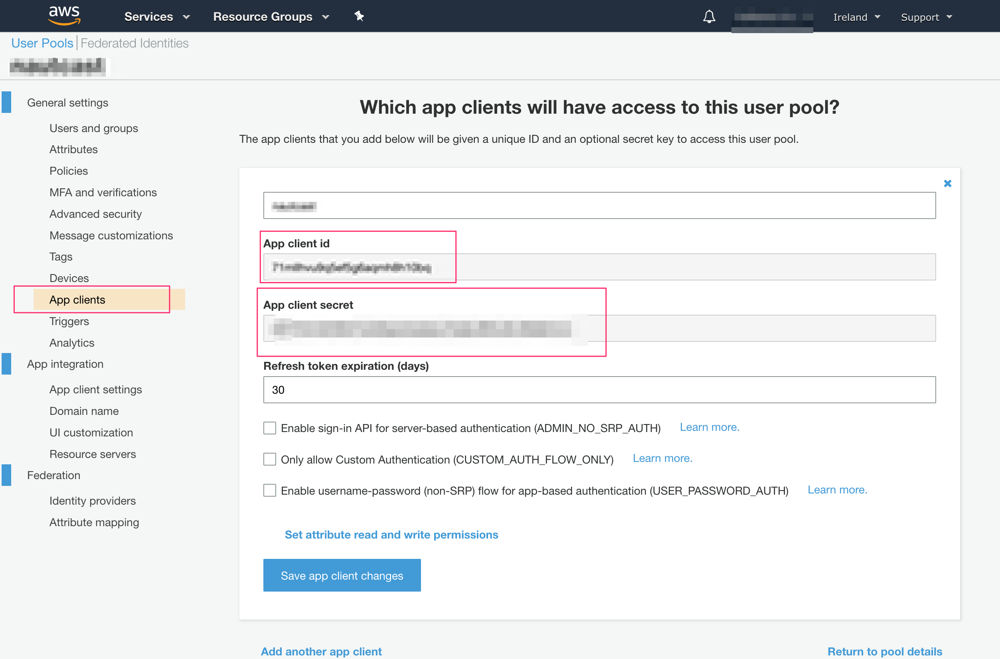
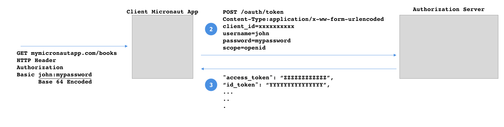

compile 'io.micronaut.configuration:micronaut-oauth2:1.0.0.BUILD-SNAPSHOT'Table of Contents
Micronaut OAuth 2.0
Integration between Micronaut, OAuth 2.0 and OpenID Connect
Version: 1.0.0.BUILD-SNAPSHOT
1 Installation
This project eases OAuth 2.0 integration with Micronaut.
<dependency>
<groupId>io.micronaut.configuration</groupId>
<artifactId>micronaut-oauth2</artifactId>
<version>1.0.0.BUILD-SNAPSHOT</version>
</dependency>To use the BUILD-SNAPSHOT version of this library, check the documentation to use snapshots.
Code can be found at the micronaut-oauth2 repository.
2 OAuth 2.0
Micronaut supports integration with authentication & authorization platforms such as Okta, Auth0, AWS Cognito, Keycloak, etc.
Once you create an application client with a provider, you will get a Client ID and optionally a Client Secret.

The previous image shows how to get an client id and client secret with AWS Cognito. Please, note you can obtain similar credentials with other providers.
Once, you get the client_id and client_secret configure the OAuth 2.0 configuration:
| Property | Type | Description |
|---|---|---|
|
java.lang.String |
Oauth 2 Application Client ID. |
|
java.lang.String |
Oauth 2 Application Client Secret. Optional. |
For example, if you configured:
src/main/resources/application.yml
micronaut:
security:
oauth2:
client-secret: '${OAUTH_CLIENT_SECRET}'
client-id: '${OAUTH_CLIENT_ID}'You can supply two environment variables OAUTH_CLIENT_SECRET, OAUTH_CLIENT_ID with the credentials you obtained from the provider to be used as values of micronaut.security.oauth2.client-id and micronaut.security.oauth2.client-secret.
3 Open ID Connect
OpenID Connect 1.0 is a simple identity layer on top of the OAuth 2.0 protocol. It allows Clients to verify the identity of the End-User based on the authentication performed by an Authorization Server, as well as to obtain basic profile information about the End-User in an interoperable and REST-like manner.
If you are new to OpenID Connect, watch OAuth 2.0 and OpenID Connect.
4 Service Discovery
The easiest way to integrate a Micronaut application with an Open ID Connect server is to use the .well-know/openid-configuration endpoint, an endpoint which applications use to retrieve the configuration information for the OIDC server.
The endpoint returns a specified set of fields. Micronaut uses the configuration returned to configure itself accordingly.
Please, chek with your provider to locate the location of the .well-know/openid-configuration configuration endpoint. Next, we show examples for common providers:
4.1 Service Discovery with OKTA
src/main/resources/application.yml
micronaut:
security:
oauth2:
client-secret: '${OAUTH_CLIENT_SECRET}'
client-id: '${OAUTH_CLIENT_ID}'
openid-configuration: '${OKTA_DOMAIN}/oauth2/${OKTA_AUTHSERVERID}/.well-known/openid-configuration'You will need to setup the OKTA_DOMAIN and OKTA_AUTHSERVERID environment variables.
Those may be something like:
export OKTA_DOMAIN=https://dev-XXXXX.oktapreview.com
export OKTA_AUTHSERVERID=default4.2 Service Discovery with AWS Cognito
To configure the .well-know/openid-configuration endpoint with AWS Cognito you can setup:
src/main/resources/application.yml
micronaut:
security:
oauth2:
client-secret: '${OAUTH_CLIENT_SECRET}'
client-id: '${OAUTH_CLIENT_ID}'
openid-configuration: 'https://cognito-idp.${AWS_REGION}.amazonaws.com/${COGNITO_POOL_ID}/.well-known/openid-configuration'Please, note you will need to define environment varaibles for AWS_REGION and COGNITO_POOL_ID.
4.3 Service Discovery with Auth0
src/main/resources/application.yml
micronaut:
security:
oauth2:
client-secret: '${OAUTH_CLIENT_SECRET}'
client-id: '${OAUTH_CLIENT_ID}'
openid-configuration: '${AUTH0_DOMAINNAME}/.well-known/openid-configuration'You will need to define the environment variable AUTH0_DOMAINNAME.
You can obtain the auth0 domain from the application dashboard:
4.4 Service Discovery with Keycloak
src/main/resources/application.yml
micronaut:
security:
oauth2:
client-secret: '${OAUTH_CLIENT_SECRET}'
client-id: '${OAUTH_CLIENT_ID}'
openid-configuration: '${KEYCLOACK_DOMAIN}/auth/realms/${KEYCLOAK_REALM}/.well-known/openid-configuration'You will need to define the environment variable KEYCLOACK_DOMAIN and KEYCLOAK_REALM for example:
export KEYCLOACK_DOMAIN=http://localhost:8080
export KEYCLOAK_REALM=master5 Endpoints
5.1 Authorization Endpoint
If you use the Service discovery endpoint some of the configuration values required to communicate with the Authorization endpoint will be inferred from the service discovery endpoint response. For example, you will not need to configure the authorization endpoint’s url since that information is typically returned by service discovery endpoint. However, if the default values do not suffice, you can configure the communication with the authorization endpoint:
| Property | Type | Description |
|---|---|---|
|
java.lang.String |
the authorization endpoint’s url. |
|
java.lang.String |
Redirection URI to which the response will be sent. Default value (http://localhost:8080/auth/code). |
|
java.util.List |
Sets OAuth 2.0 scopes. Default value (['openid']). |
|
java.lang.String |
Set OAuth 2.0 Response Type. Default value ({@value #DEFAULT_RESPONSETYPE}). |
|
java.lang.String |
Informs the Authorization Server of the mechanism to be used for returning parameters from the Authorization Endpoint. Default value ({@value #DEFAULT_RESPONSEMODE}). |
|
ASCII string value that specifies how the Authorization Server displays the authentication and consent user interface pages to the End-User. Default value (null). |
|
|
Space delimited, case sensitive list of ASCII string values that specifies whether the Authorization Server prompts the End-User for reauthentication and consent. Default value (null). |
|
|
java.lang.Integer |
Maximum Authentication Age. Default value (null). |
|
java.util.List |
End-User’s preferred languages and scripts for the user interface. Default value (null). |
|
java.util.List |
Requested Authentication Context Class Reference values. Default value (null). |
The authorization request is built by default with DefaultAuthenticationRequestProvider. Remember you can always replace that bean and provide your own implementation of AuthenticationRequestProvider.
5.1.1 State
The default implementation does not provide an Authentication Request state parameter.
Opaque value used to maintain state between the request and the callback. Typically, Cross-Site Request Forgery (CSRF, XSRF) mitigation is done by cryptographically binding the value of this parameter with a browser cookie.
However, you can provide a StateProvider bean and it will be included in the authentication request.
To validate the state received in the response provide an implementation of StateValidator bean.
5.1.2 IDToken Hint
The default implementation does not provide an ID Token hint.
A Token previously issued by the Authorization Server being passed as a hint about the End-User’s current or past authenticated session with the Client.
However, you can provide a IdTokenHintProvider bean and it will be included in the authentication request.
5.1.3 Login Hint
The default implementation does not provide an login hint.
Hint to the Authorization Server about the login identifier the End-User might use to log in.
However, you can provide a LoginHintProvider bean and it will be included in the authentication request.
5.1.4 Nonce
The default implementation does not provide an Nonce parameter.
A String value used to associate a Client session with an ID Token, and to mitigate replay attacks.
However, you can provide a NonceProvider bean and it will be included in the authentication request.
5.2 Token Endpoint
If you use the Service discovery endpoint some of the configuration values required to communicate with the Token endpoint will be inferred from the service discovery endpoint response. For example, you will not need to configure the token endpoint’s url since that information is typically returned by service discovery endpoint. However, if the default values do not suffice, you can configure the communication with the authorization endpoint:
| Property | Type | Description |
|---|---|---|
|
java.lang.String |
token endpoint’s url |
|
java.lang.String |
Oauth 2.0. Grant Type. Default value (authorization_code). |
|
java.lang.String |
Client Authentication method. By default no value is specified. In that case, the value returned by AuthMethodProvider, if such a bean exists, is used. |
|
The Content-Type used to communicate with the token endpoint. Default value (application/x-www-form-urlencoded). |
|
|
java.lang.String |
Redirection URI to which the response will be sent. |
The authorization request is built by default with DefaultTokenRequestProvider. Remember you can always replace that bean and provide your own implementation of TokenRequestProvider.
5.3 End Session Endpoint
A logout process may look like the one displayed in the next image:
Ending the session in the authorization server provider is not standard.
Micronaut provides several beans which are loaded by default.
The authorization server’s end session url is provided by an implementation of EndSessionUrlProvider. By default, DefaultEndSessionUrlProvider is used.
Micronaut attempts to create a valid configuration by default but you can always control the end-session endpoint configuration:
However, if the default values do not suffice, you can configure the communication with the authorization endpoint:
| Property | Type | Description |
|---|---|---|
|
java.lang.String |
The end-session endpoint url |
|
java.lang.String |
Redirection URI to which the response will be sent. |
|
java.util.List |
End-session endpoint parameters. |
Several Provider Specific beans related to end session endpoint configuration are provided.
5.3.1 Logout Controller
You will need to enable the Logout Controller and accept GET requests.
src/main/resources/application.yml
micronaut:
security:
...
..
.
endpoints:
logout:
enabled: true (1)
get-allowed: true (2)| 1 | Enable Logout Controller. |
| 2 | Accept HTTP GET requests to the logout controller endpoint. |
5.3.2 Logout URL
If you are using Server side view rendering support in Micronaut, the EndsessionViewModelProcessor injects into the model the logout url of the authorization server correctly configured.
| Property | Type | Description |
|---|---|---|
|
boolean |
Sets whether the {@link EndsessionViewModelProcessor} is enabled. Default value ({@value #DEFAULT_ENABLED}). |
|
java.lang.String |
Model key name. Default value ({@value #DEFAULT_ENDSESSIONURLKEY}). |
Next code snippets shows a Velocity view which contains a link to logout.
<!DOCTYPE html>
<html>
<head>
<title>Logout/title>
</head>
<body>
<a href="${endsessionurl}">Logout</a>
</body>
</html>6 Provider Specific Beans
Cognito
If the term cognito is present in the value of micronaut.security.oauth2.openid-configuration the next beans are loaded:
If you want to disable that bean you can set micronaut.security.oauth2.token.auth-method-provider.cognito to false
If you want to disable that bean you can set micronaut.security.oauth2..end-session.aws-cognito.enabled to false
Okta
If the term okta is present in the value of micronaut.security.oauth2.openid-configuration the next beans are loaded:
If you want to disable that bean you can set micronaut.security.oauth2.end-session.okta.enabled to false
Auth0
If the term auth0 is present in the value of micronaut.security.oauth2.openid-configuration the next beans are loaded:
If you want to disable that bean you can set micronaut.security.oauth2.end-session.auth0.enabled to false
7 Flows
7.1 OpenID Connect Authorization code Flow
The following configuration illustrates a possible set up to use authorization code flow with Micronaut and a third-party OpenID Configuration authorization server.
src/main/resources/application.yml
micronaut:
security:
enabled: true (1)
oauth2:
client-secret: '${OAUTH_CLIENT_SECRET}' (2)
client-id: '${OAUTH_CLIENT_ID}' (3)
openid-configuration: '${OKTA_DOMAIN}/oauth2/${OKTA_AUTHSERVERID}/.well-known/ openid-configuration' (4)
token:
jwt:
enabled: true (5)
cookie:
enabled: true (6)| 1 | Enable security |
| 2 | Client Secret. Your authorization server provider provides this value. |
| 3 | Client ID. Your authorization server provider provides this value. |
| 4 | well-know openid-configuration endpoint url. Allows micronaut to discover the configuration of the Open ID Configuration server. |
| 5 | Often, ID Token will be responded as JWT tokens. You will need to enable Micronaut’s JWT support to validate it. |
| 6 | Once, validated you may want to save the JWT IDToken in a cookie. To read in subsequent requests, enable Cookie Token Reader. |

7.1.1 Authorization Code Controller
The AuthorizationCodeController controller handles the response from the Authorization endpoint and it can be configured:
| Property | Type | Description |
|---|---|---|
|
boolean |
Sets whether the {@link AuthorizationCodeController} is enabled. Default value ({@value #DEFAULT_ENABLED}). |
|
java.lang.String |
if the callback endpoint is /authcode/cb controller path will be /authcode. Default value ({@value #DEFAULT_CONTROLLERPATH}). |
|
java.lang.String |
if the callback endpoint is /authcode/cb controller action path will be /cb . Default value ({@value #DEFAULT_ACTIONPATH}). |
7.1.2 ID Token Validator
Assuming the ID Token is a JWT token, the DefaultIdTokenAccessTokenResponseValidator validates the JWT Claims against every bean of type GenericJwtClaimsValidator and IdTokenClaimsValidator.
Some GenericJwtClaimsValidator are already registered:
Some IdTokenClaimsValidator are already registered: and:
Please, validate your IDToken as described in the ID Token Validation section.
Remember to enable JWT support micronaut.security.token.jwt.enabled=true.
7.1.3 Failure Handler
If the validation of the IdTokenAccessTokenResponse, an object which encapsulates the response of the token endpoint, fails a InvalidIdTokenAccessTokenResponseException is raised.
Read Error Handling section in the documentation to handle the exception according to your needs.
7.1.4 Successful ID Token Handler
Once the authentication has been validated, it is to time handle the ID Token. Provide a bean of type: SuccessfulIdTokenAccessTokenResponseHandler
7.1.5 Cookie Successful ID Token Handler
By default, CookieSuccessfulIdTokenAccessTokenResponseHandler is provided which can be configured with:
| Property | Type | Description |
|---|---|---|
|
java.lang.String |
Cookie Name. Default value (JWT). |
|
java.lang.String |
Sets the domain name of this Cookie. Default value (JWT). |
|
java.lang.String |
Sets the path of the cookie. Default value ({@value #DEFAULT_COOKIEPATH}). |
|
java.lang.String |
Sets the login success target URL. Default value ({@value #DEFAULT_LOGINSUCCESSTARGETURL}). |
|
java.lang.Boolean |
Whether the Cookie can only be accessed via HTTP. Default value ({@value #DEFAULT_HTTPONLY}). |
|
java.lang.Boolean |
Sets whether the cookie is secured. Default value ({@value #DEFAULT_SECURE}). |
|
java.time.temporal.TemporalAmount |
Sets the maximum age of the cookie. |
|
boolean |
Enables CookieSuccessfulIdTokenAccessTokenResponseHandler. Default value ({@value #DEFAULT_ENABLED}). |
7.2 Password Grant Type
The Password grant is one of the simplest OAuth grants and involves only one step: the application presents a traditional username and password login form to collect the user’s credentials and makes a POST request to the server to exchange the password for an access token
For example, the next image illustrates a Basic auth authentication which does a remote grant type pasword authentication:

You can enable an implementation of Authentication Provider to authenticate using Grant type password.
micronaut:
security:
oauth2:
client-secret: '${OAUTH_CLIENT_SECRET}'
client-id: '${OAUTH_CLIENT_ID}'
grant-type-password:
enabled: true| Property | Type | Description |
|---|---|---|
|
boolean |
Sets whether the {@link GrantTypePasswordRequestProvider} is enabled. Default value ({@value #DEFAULT_ENABLED}). |
|
The Content-Type used to communicate with the token endpoint. |
|
|
java.util.List |
OAuth 2.0 scopes. |